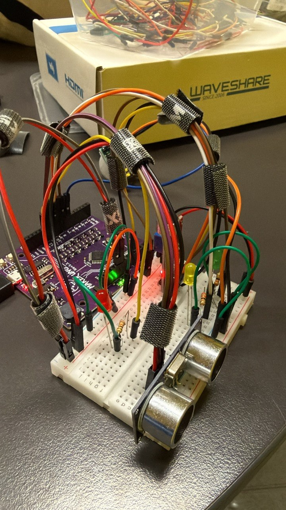

Emergencies can go unnoticed.
People living alone may experience falls, distress, or emergencies without being able to reach a phone or manually call for assistance.
ARDUINO · RASPBERRY PI · SENSORS · IOT

/ PROJECT OVERVIEW
EchoSync brings the physical prototype and a separate digital application ecosystem into one demonstrable flow. Its role is to explore how sensor evidence and a spoken check-in could provide useful context before a person decides what response is appropriate.
/ PROBLEM + APPROACH
The project explores an assistive workflow without presenting the prototype as clinical validation or a commercial emergency system.
People living alone may experience falls, distress, or emergencies without being able to reach a phone or manually call for assistance.
EchoSync explores non-wearable monitoring through voice and sound activity, PIR motion, ultrasonic distance changes, load-cell readings, spoken confirmation prompts, timed logic, and structured incident data.
/ HARDWARE PROTOTYPE
Integrated development views show how the sensors, display, and load-cell assembly were combined before the individual component roles.
The photographs show the working development prototype. Exposed breadboard wiring supported rapid hardware integration and testing rather than representing a final product enclosure.
/ SYSTEM ARCHITECTURE
Each step keeps a clear boundary between physical sensing, edge logic, data exchange, and human-facing response tools.
Architecture flow in stage order: physical environment, sensor inputs, Arduino sensor node, USB serial, Raspberry Pi, HTTP/API, EchoSync application, then response and escalation.
This diagram represents the prototype architecture and demonstration workflow. It does not indicate a live emergency-service connection.
/ DETECTION + ESCALATION
EchoSync does not assume that one noisy reading proves an emergency. Its prototype flow considers sensor patterns, asks for a response, and prepares evidence for review.
/ JSON + SERIAL COMMUNICATION
The data example below uses the field names emitted by the checked-in Arduino sketch.
Sanitised illustrative values; field names match the Arduino serial output.
/ INTEGRATED WORKFLOW
These development photographs document the Arduino-to-Raspberry Pi test arrangement used to exercise serial data, audio feedback, and the wider demonstration workflow—not a final enclosure or validated deployment.
/ APPLICATION ECOSYSTEM
The separate EchoSync repository contains the broader application: a public website, operator-style dashboard, caregiver and responder views, incident information, and API routes for structured alert exchange.
/ DEMONSTRATION VIDEOS
Both recordings are user-controlled demonstrations. Audio and video never start automatically.
/ HARDWARE GALLERY
Select any image to inspect it in a larger, keyboard-accessible view.
/ PROJECT RESULTS
These outcomes describe the working prototype and recordings—without accuracy percentages, clinical claims, or production-deployment claims.
/ SOURCE REPOSITORIES
The application ecosystem and the embedded Maker-Lab prototype are kept distinct.
Contains the broader EchoSync software application, portal, public website, and related project ecosystem.
View full repositoryContains the Arduino sensor firmware and Raspberry Pi prototype workflow stored inside Maker-Lab.
/ LESSONS LEARNED
/ FUTURE IMPROVEMENTS
These are planned directions, not completed features.